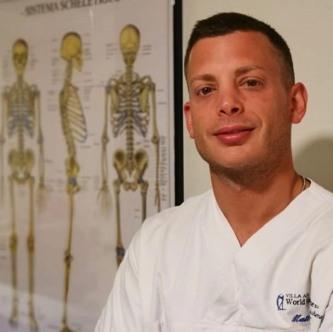
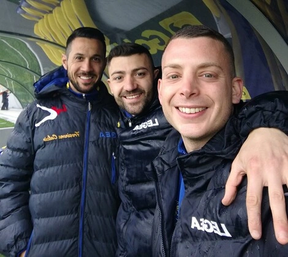
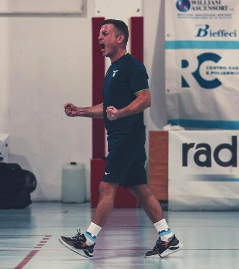
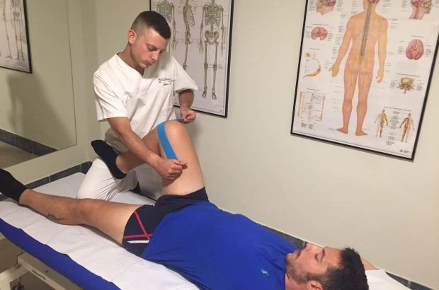

In questa pagina scoprirai il mio percorso, la mia filosofia di lavoro e il mio approccio alla fisioterapia. Ti racconterò cosa mi ha spinto a intraprendere questa professione e come posso guidarti verso il benessere, il recupero e una vita senza dolore.

— Fisioterapista a Roma
Ciao, sono Matteo, un fisioterapista e osteopata specializzato nel trattamento di atleti, sia amatoriali che professionisti. Ho maturato esperienza nella Serie A con il Frosinone Calcio, affinando la capacità di recupero rapido senza rischio di ricadute. Oltre alla fisioterapia, sono anche allenatore federale di calcio a 5 e Uefa C di calcio a 11, unendo competenze sportive e riabilitative. Grazie alla laurea in Scienze Motorie e alla specializzazione in terapia posturale Mezières, offro trattamenti personalizzati per ogni paziente, mettendo sempre al centro il benessere della persona.
— Osteopata Frosinone Calcio
Dal 2017 al 2019, ho avuto l'opportunità di lavorare come osteopata della prima squadra del Frosinone Calcio. In un contesto di alto livello come la Serie A, il recupero degli atleti deve essere rapido ed efficace, senza rischio di ricadute. Questa esperienza mi ha insegnato molto: ho affinato la mia manualità, imparato a gestire infortuni complessi e lavorato a stretto contatto con medici e preparatori atletici. Il confronto quotidiano con professionisti del settore ha arricchito la mia formazione, permettendomi di migliorare la mia capacità di trattamento in ambito sportivo.


— Futsal, Allenatore UEFA B
Oltre alla fisioterapia, ho sempre nutrito una forte passione per il calcio a 5. Ho conseguito il titolo di allenatore federale di primo e secondo livello per il futsal e la licenza UEFA B per il calcio. Attualmente alleno il Don Bosco Calcio a 5 e la Rappresentativa Under 15 del Lazio. Tra le esperienze più significative, ho avuto l'opportunità di collaborare con la Lazio Calcio a 5, squadra militante in Serie A2 Élite, raggiungendo ottimi risultati in classifica. La collaborazione con diverse società di calcio a 5 mi ha reso un punto di riferimento per i loro tesserati, supportandoli nel recupero e nel ritorno in campo al massimo della forma.
— Terapia manuale e rieducazione posturale
Nel mio lavoro, metto al centro la persona. Ogni paziente ha esigenze specifiche e merita un trattamento su misura. Per questo, utilizzo tecniche diverse a seconda del caso: dalla terapia manuale alla rieducazione posturale, fino ai protocolli di riabilitazione sportiva. Attualmente sto frequentando un master biennale di terapia manuale e chiropratica presso APA Institute. Questa ultima esperienza mi sta dando chiarezza nell'affinare tecniche soprattutto nella fase acuta, ma al contempo mi permette di lavorare sul riequilibrio armonico e preventivo. Per me, la fisioterapia non è solo un lavoro, ma una missione, con l’obiettivo di migliorare la qualità della vita e le prestazioni di ogni paziente.
